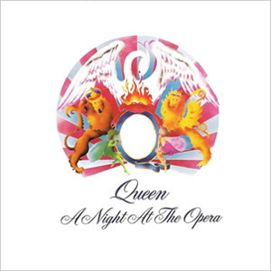

A Night at the Opera
by Queen

Queen really reached for the stars with the production and release of their fourth album, A Night at the Opera in 1975. At the time it was the most expensive album ever recorded as it utilized extraordinary and methodical overdubs to achieve a rich orchestral and choral effects and incorporated rich replications of a wide range of styles. Many of these styles had not previously been adopted by hard rock bands, but the tremendous inventiveness and attention to details made this album the pinnacle of Queen’s career.
The origins of queen date back to 1968, when guitarist Brian May and drummer Roger Taylor started the group, Smile, while students in London. A friend and follower of the band, Farrokh Bulsara, eventually joined the group in late 1970 and convinced the members to change the name to Queen because of its “regal” quality and his ability (as an art student) to design an adequate logo. After going through a number of bass players, John Deacon joined in 1971 as the permanent fourth member of the group which maintain this lineup for the next 20 years. Shortly after the release of their 1973 self-titled debut album, Bulsara officially adopted his stage name, Freddie Mercury. In 1974, the group released two critically acclaimed LPs, Queen II and Sheer Heart Attack, each of which spawned a Top 10 hit in the UK with Sheer Heart Attack being their first commercial success in the US.
In early 1975, the band shopped for a better record deal, at first considering Led Zeppelin’s new Swan Song label before signing with A&M who gave the group a huge recording budget. A Night at the Opera was co-produced by Roy Thomas Baker and the individual band members who invented some of the distinctive techniques required to achieve the desired sounds and effects. The album borrowed its title from a popular 1935 Marx Brothers movie of the same name.
Tracklist:
- Death on Two Legs
- Lazing On a Sunday Afternoon
- I’m in Love with My Car
- You’re My Best Friend
- ’39
- Sweet Lady
- Seaside Rendezvous
- The Prophet’s Song
- Love of My Life
- Good Company
- Bohemian Rhapsody
- God Save the Queen
The album begins with Freddie Mercury’s, “Death on Two Legs (Dedicated to…)”, at first coming in with a classical sounding piano and doomy sound effects, including a slight background scream. The song then breaks in as a steady rocker with an upfront lead by May and unambiguous lyrics of pure venom, adding an acid sensation to this otherwise enjoyable rock song. Mercury penned the tune about Queen’s ex-manager, Norman Sheffield, who had reportedly mistreated the band during their early years. As if to intentionally lighten the atmosphere after the opener, “Lazing on a Sunday Afternoon” follows as a light music hall piano track which, after a single minute, abruptly morphs into a hard rock bridge to Taylor’s “I’m in Love with My Car”. On this unique take on a classic analogy between a woman and an automobile, Taylor’s lead vocals work perfectly for the slow screed along with May’s raw guitar chords.

“You’re My Best Friend” was written by John Deacon on a Wurlitzer electric piano and is the closest the group would come to a traditional seventies pop song. The song features stark but enjoyable production and overdubs with depth, contrasting with the upfront Wurli piano, and deep backing harmonies throughout. May adds some fine harmonized guitars late in the song, topping off this immensely entertaining track, which was a Top 10 hit. “’39” is another giant leap in musical diversity as a folk acoustic track with a simple stomp in the background and May taking lead vocals. The track has an aura of fantasy brought on by the operatic backing vocals, the slight synthesizer effects and the lyrical fantasy of time and space travel. The album’s first side ends with, perhaps, the two weakest tracks on A Night at the Opera. “Sweet Lady” is a bridge too far in trying to be original, with odd timings and creative riffs which, unfortunately, do not pay entertainment dividends. “Seaside Rendezvous” is another experimental music hall type song, which features vocalized renditions of different instruments, making it more of a musical accomplishment than a legitimate track on a rock album.
The second side begins with “The Prophet’s Song”, a theatrical epic by May with a dramatic, building theme and slightly psychedelic feel. The middle section features an orchestra made wholly of layered vocals with repetitive timing effects. When the music returns, May brings the rock track back with a layered guitar lead over choppy rhythms through a long outro with an acoustic solo instrumental at the very end. Mercury’s “Love of My Life” is a sad and simple song of lost love, which mainly features Mercury solo on piano with just some slight bass, backing harmonies, and a later distant but potent electric guitar lead by May. After a very slight intro guitar lead, May plays a solo ukulele while singing lead vocals on “Good Company”. This building track eventually incorporates some rhythm and further overdubbed guitars which recreate a Dixieland jazz arrangement.
The masterpiece of the album is Mercury’s epic “Bohemian Rhapsody”, a song which he had developed in pieces dating back to the late 1960s. Starting with an a capella vocal harmony intro before making its way to the song proper with Mercury singing and playing piano, the song moves through several distinct phases and sonic dynamics, the most famous being the long middle, pseudo-opera section. This was accomplished through an elaborate choir effect created by Mercury, May and Taylor singing their specific vocal parts for hours on end, with over 180 separate overdubs mixed and sub-mixed onto the 24-track master tape, with the entire process taking about three weeks to complete. Still, with all of this bombast and tremendous production, it may be the quiet sections of the song, such as Mercury’s final solo vocal line with subtle guitar backing by May, that makes this song a true masterpiece. The album concludes with May’s instrumental of “God Save the Queen”, the British national anthem, which was originally recorded in 1974 as a homage to Jimi Hendrix’s version of “The Star-Spangled Banner”.
Group Musicians:
- Freddie Mercury – Lead Vocals, Piano
- Brian May – Guitars, Ukulele, Harp, Vocals
- John Deacon – Bass, Keyboards
- Roger Taylor – Drums, Percussion, Vocals